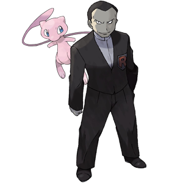

C'est le chef de la Team Rocket!
Il a capturé Mew!
Pour sauver le pauvre Pokémon…
1. Watch the music video for Carmen by Stromae.
2. Do your best to answer the questions below in simple French. You can provide additional comments in English afterwards.
[contact-form to="thoy@broward.edu"][contact-field label="Nom" type="name" required="1" /][contact-field label="Quel est le message du clip? Es-tu d’accord avec ce message? Pourquoi ou pourquoi pas?" type="textarea" required="1" /][contact-field label="Es-tu accro (addicted) d'Internet et de la technologie? Si oui, comment? Sinon, que fais-tu pour ne pas devenir accro?" type="textarea" required="1" /][contact-field label="If you would like, you may add any additional commentary in English." type="textarea" required="1" /][/contact-form]3. When you are finished, be sure to submit, then click here!